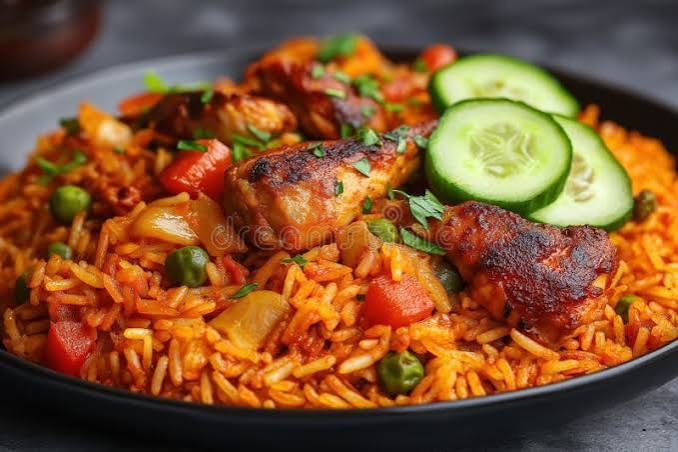

NIGERIAN FAVOURITES
From our kitchen.
BREAKFAST
Yam & Egg Sauce
Fried or boiled yam served with rich Nigerian egg sauce.
₦5,500
PARTY CLASSIC

Jollof Rice & Chicken
Smoky Nigerian party-style jollof with grilled chicken.
₦8,500
SOUP POT

Pepper Soup
A hot, aromatic Nigerian pepper soup with your choice of protein.
₦7,000
EDO-INSPIRED

Pounded Yam & Egusi
Soft pounded yam with rich, generously seasoned egusi soup.
₦9,500
STREET FAVOURITE

Beef Suya
Spiced grilled beef served with onions and fresh pepper.
₦6,500
FROM THE GRILL

Grilled Fish & Plantain
Seasoned grilled fish with ripe fried plantain and pepper sauce.
₦14,000
HOME STYLE

Beans & Plantain
Slow-cooked beans with sweet fried ripe plantain.
₦6,500
EDO FLAVOUR

Owo Soup & Starch
A rich Edo-inspired soup served with a traditional starch option.
₦10,000